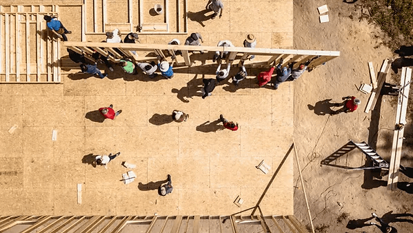

Sobre Gallos al Rescate
Del interés a la acción
En Gallos al Rescate, nos dedicamos a servir a nuestra comunidad y atender sus necesidades más urgentes. Nuestro propósito es brindar apoyo en áreas clave como el acceso al agua potable, la educación, la seguridad, la salud y mucho más. Creemos que juntos podemos crear un entorno mejor para todos.
Estamos aquí para escuchar, ayudar y marcar la diferencia. Ya sea a través de donaciones, programas comunitarios o asesoramiento, trabajamos incansablemente para mejorar la calidad de vida de nuestros vecinos. Si necesitas ayuda o conoces a alguien que la necesite, no dudes en contactarnos.
¡Unidos somos más fuertes! Únete a Gallos al Rescate y sé parte del cambio positivo en nuestra comunidad.
